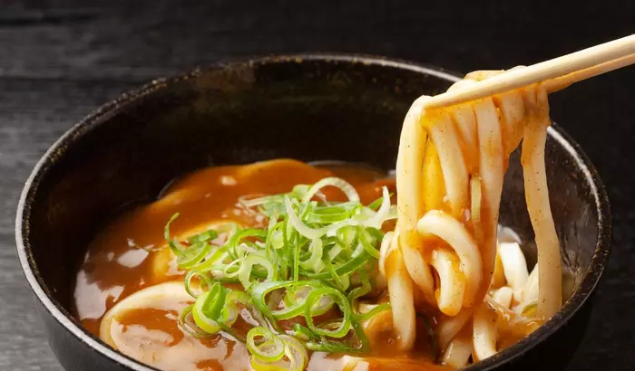

Curry Udon

Udon served with a Curry sauce
This japanese dish combines the nation's two favourite foods into one.
Follow along this recipe to make and prepare this simple, vegetarian dish.
Ingredients:
- Udon noodles
- Curry powder, 1/2 cup
- White onions, sliced, half of an onion
- Green Onions, to garnish
Steps:
- Boil the noodles, until they are cooked.
- In a Seperate pot, saute the onions until caramelized.
- Add the curry powder, and cook out the roux.
- Add 1/2 cup of water, and add in the cooked udon noodles.
- Cook until well-combined, finish with green onions.